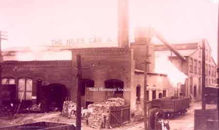
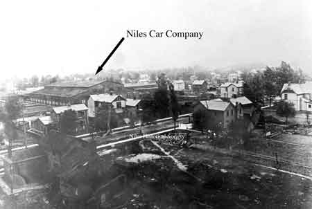
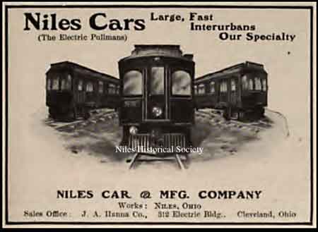
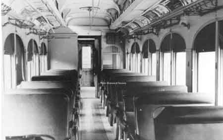
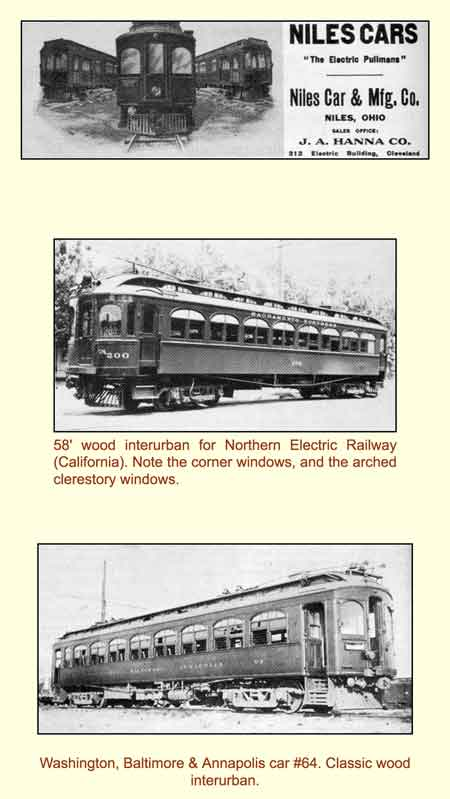
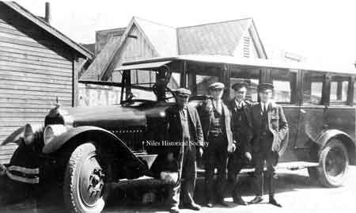
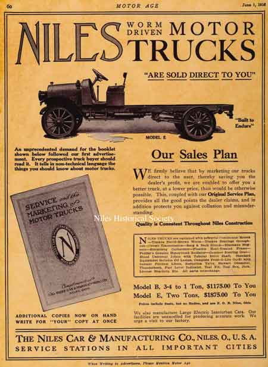
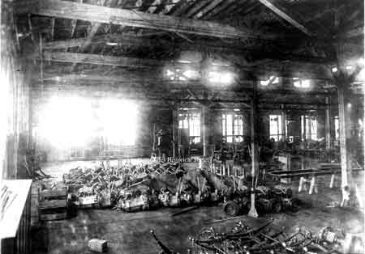

Niles Car and Manufacturing Company
{kind=link}

Erie Street view of the Niles Car and Manufacturing Company. PO1.1580
{kind=link}

Photo of one building of the Niles Car & Manufacturing Co. taken from atop the water tower in the early 1900's. Mason Street is in the foreground. PO1.1429
{kind=link}

Advertisement for the Niles Car & Mfg. Co.
{kind=link}

The interior of car # 308 built by the Niles Car & Manufacturing Co. It is now in the Indiana Museum of Transportation & Communication in Noblesville, Ind. PO1.1435
{kind=link}

Niles Car Catalog
{kind=link}

The Niles Car barn bus belonged to the Mahoning Valley Electric Railway Company. It was used to take the “track-walkers” out to remote areas, where they would walk along the tracks with a bucket of sand. They would sand the tracks where necessary and make sure the switches were clean. The man holding the bucket, was Joseph Marsico, a track walker for the company.
{kind=link}

Advertisement that appeared in the June 1916 Motor Age magazine describing the advantages and types of motor trucks built by the Niles Car & Manufacturing Company.
{kind=link}

Assembly line of truck chassis at the Niles Car & Manufacturing Co. PO1.1530
![May 13, 1916, saw the first truck shipped to a service station in Cleveland, with several more in the construction phase. They were receiving many inquiries and the future looked promising. Later that month, the Niles Times published a help wanted ad for the truck assembly plant. Delivery was made to the Friedman Transfer Company of Youngstown. This truck used a patented worm drive rear end for propulsion and was the finest tuned yet. A second delivery to the same company soon followed within the week. By the end of July 1916, many trucks were assembled and ready for shipment. Unfortunately, supply shortages continued, increasing prices, resulting in dreaded delays.](Stryz/NilesTruckCo/DSCb0702.jpg)